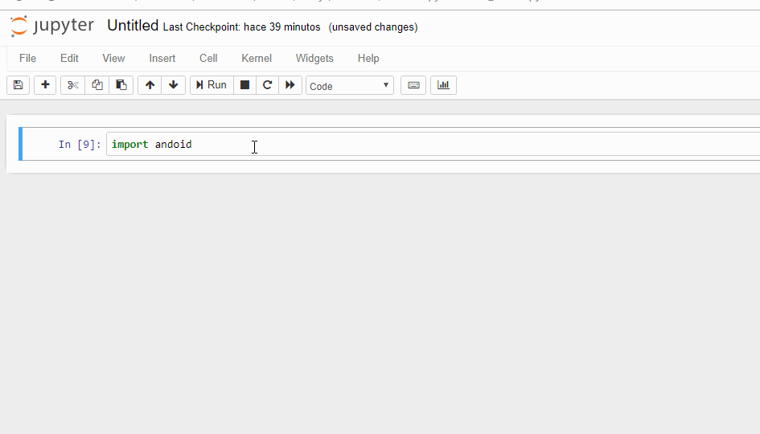

El módulo android.py es necesario para poder invocar objetos en Python que puedan acceder a la API de Android. A continuación están los enlaces donde podrás descargar los programas, sin embargo, haremos la configuración vía las libretas de Jupyter con el fin de familiarizarnos con el sistema y tener una evidencia de evaluación de los avances de la semana.
En este laboratorio vamos a utilizar Jupyter para descargar, instalar y configurar el módulo en nuestro sistema local. Los pasos de este laboratorio deben realizarse una única vez, ya que guardado el módulo en el directorio adecuado de su sistema lo hace accesible para siempre (salvo que lo borren).
- Conocer algunas de las funcionalidades de Jupyter Notebooks
- Obtener archivos de internet de manera programática
- Guardar archivos localmente de forma
Qué haremos
En este laboratorio vamos a usar el ambiente de Jupyter que instalaron previamente para configurar el uso del módulo |
|

What you'll learn
- Cómo usar libretas de Jupyter para ejecutar código de Python
- Como obtener archivos de internet usando Jupyter
- Como modificar archivos en Jupyter y guardarlos localmente
- Como acceder al sistema operativo local desde una libreta de Jupyter
Que vamos a necesitar
- Una computadora personal con la aplicación Jupyter Notebooks instalada
- Conexión a internet
Video
Inicia una libreta de Jupyter y en una celda de código escribe el siguiente comando:
import sys
sys.pathEl comando anterior importa la librería sys al espacio del intérprete y después regresa una lista que especifica los los directorios de búsqueda de módulos que el sistema utiliza. |
Dependiendo de su sistema verán algo similar a esto:
['', 'C:\\Users\\HoracioTapiaMcClung\\Anaconda2\\python27.zip', 'C:\\Users\\HoracioTapiaMcClung\\Anaconda2\\DLLs', 'C:\\Users\\HoracioTapiaMcClung\\Anaconda2\\lib', 'C:\\Users\\HoracioTapiaMcClung\\Anaconda2\\lib\\plat-win', 'C:\\Users\\HoracioTapiaMcClung\\Anaconda2\\lib\\lib-tk', 'C:\\Users\\HoracioTapiaMcClung\\Anaconda2', 'C:\\Users\\HoracioTapiaMcClung\\Anaconda2\\lib\\site-packages', 'C:\\Users\\HoracioTapiaMcClung\\Anaconda2\\lib\\site-packages\\win32', 'C:\\Users\\HoracioTapiaMcClung\\Anaconda2\\lib\\site-packages\\win32\\lib', 'C:\\Users\\HoracioTapiaMcClung\\Anaconda2\\lib\\site-packages\\Pythonwin', 'C:\\Users\\HoracioTapiaMcClung\\Anaconda2\\lib\\site-packages\\IPython\\extensions', 'C:\\Users\\HoracioTapiaMcClung\\.ipython']
Vamos a utilizar el último directorio de la lista anterior para alojar el módulo, de modo que el sistema pueda localizarlo durante la sesión. En otra celda de Python escribe
%cd C:\Users\HoracioTapiaMcClung\.ipythonEl efecto de este comando es cambiar al directorio especificado.
Una vez hecho el cambio a un directorio en el que el sistema busca módulos, vamos a descargar el módulo y colocarlo en la ruta especificada. En otra celda de código escribe el siguiente comando, con el cuál se descarga el módulo de un sitio especificado por el url:
%load https://raw.githubusercontent.com/damonkohler/sl4a/master/python/ase/android.pyEl resultado de ejecutar la celda anterior será una nueva celda con el código del archivo especificado por la ruta. Observa que de manera automática la primera línea se comenta. |
Una vez descargado el código correspondiente al módulo, vamos a guardarlo en la ruta especificada. Para esto, incluye el código siguiente en la primera línea de la celda que contiene el código que acabamos de descargar.
%%file android.py
# %load https://raw.githubusercontent.com/damonkohler/sl4a/master/python/ase/android.py
# Copyright (C) 2009 Google Inc.
#
...El resultado de ejecutar la celda anterior será un mensaje indicando que el archivo android.py se ha guardado |
Verifica que el módulo es accesible por el intérprete escribiendo el siguiente código en un celda. Si evalúa correctamente significa que el módulo está disponible. De otro modo el sistema de arroja un error.
import androidEste es un ejemplo de la salida del comando anterior si el módulo no existe o no está disponible en un directorio adecuado. Observen que en este ejemplo el nombre del módulo no está bien escrito. Algo similar ocurre si no guardaron el módulo correctamente. |  |
¿Pudiste descargar el modulo de android.py a través de una libreta de Jupyter?
¿Pudiste importar el módulo android.py sin errores?
Las entregas se especifican empezando con el nombre del archivo y la descripción del contenido.